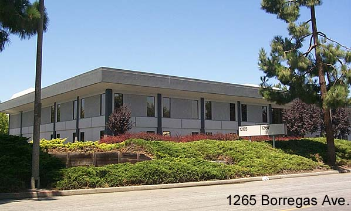

This was Atari's original Corporate Headquarters
up until the sale of Atari in July of 1984 when
Corporate Headquarters was moved to 1196
Borregas Ave which was the former Corporate
Research building.
Also housed in this building was the Atari Company Store where employees
and their families could purchase Atari
and Warner products, t-shirts, posters and much more.